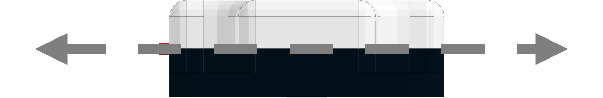
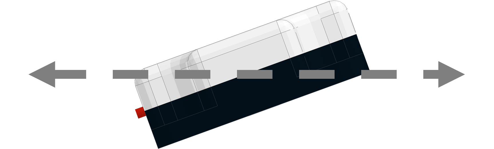

Compass (45-2003)
The Compass uses a magnetometer and an accelerometer to calculate heading data based on Earth’s magnetic field. The compass can return the heading data, accelerometer data and magnetometer data to the user. Anything that generates a magnetic field must be moved away from the sensor like power cables, motor or magnetic material. This must happen because during calibration the sensor will add an offset to account for other magnetic sources in the area.
Sensor Type : Four Wire I2C
Default I2C Address : 0x24
Sensor ID Code : 0x63
Dimensions : 32mm x 32mm x 12mm
Mounting Holes : 24mm x 24mm
Power : 5V DC, 22mA Max
Signal Logic Levels : Logic 0 - 0V, Logic 1 - 5V
I2C Bus Speed : 100kHz max
I2C Address Change Option : Yes (Even Number 0x10 - 0xEE)
Compass Visual Programming BlocksList of available functions:
- Fusion.compass(driver, addr)
- hardIronCalibration()
- getHeading()
- nullAccelerometer(axis)
- getAccelerometer()
- tiltUp()
- tiltDown()
- getMagnetometer()
- scaleAccelerometer())
Fusion.compass(driver, addr)
Definition
This class contains the necessary drivers for the Modern Robotics Compass and must be called at the beginning of the program before using any other class functions.
Parameters
driver : Main driver object so the class can call driver functions (f)
addr : Enter an I2C address in hexidecimal if different from defaultReturns
Compass Object
Example
import Fusion f = Fusion.driver() cmp1 = Fusion.compass(f) cmp2 = Fusion.compass(f, 0x40)hardIronCalibration()
Definition
Hard Iron Calibration (HIC) is a method of checking for magnets or an object generating a magnetic field around the sensor and generating an offset to account for the magnetic field. During HIC the sensor must be rotated 360° in 5 seconds while keeping a constant pace. Try to start and stop the sensor pointing due North.
Parameters
None
Returns
None
Example
import Fusion f = Fusion.driver() cmp = Fusion.compass(f) cmp.hardIronCalibration()getHeading()
Definition
This function returns the heading that ranges between 0° and 359°. The heading is calculated from the accelerometer readings, the magnetometer readings, and the data collected during calibration.
Parameters
None
Returns
Heading(Degrees) : int (0 - 359)
Example
import Fusion f = Fusion.driver() cmp = Fusion.compass(f) print cmp.getHeading()nullAccelerometer(axis)
Definition
This function will calibrate the X, Y and Z values by zeroing them. The X and Y calibration must be done with the sensor laying flat on the horizon. The Z must be calibrated with the sensor held vertical. Allow a minimum of 3 seconds for calibration.
Position for X and Y axis.

Position for Z axis.
Parameters
axis : char ( 'X' , 'Y' , 'Z')
Returns
None
Example
import Fusion f = Fusion.driver() cmp = Fusion.compass(f) cmp.nullAccelerometer('X') cmp.nullAccelerometer('Y') cmp.nullAccelerometer('Z')getAccelerometer()
Definition
This function returns the accelerometer values for the X, Y and Z axis.
Parameters
None
Returns
Accelerometer : int [ X , Y , Z ] (-32,767 - 32,768)
Example
The following example returns an array of size 3 and stores it into the variables X, Y, and Z.
import Fusion f = Fusion.driver() cmp = Fusion.compass(f) (X, Y, Z) = cmp.getAccelerometer() print XTo collect a single value instead of the array, reference the index. This will print the X value.
import Fusion f = Fusion.driver() cmp = Fusion.compass(f) print cmp.getAccelerometer()[0]tiltUp()
Definition
This function calculates an offset to compensate for the magnetic field not being perfectly horizontal. The sensor must be held 20° above the horizon during calibration.

Parameters
None
Returns
None
Example
import Fusion f = Fusion.driver() cmp = Fusion.compass(f) cmp.tiltUp()tiltDown()
Definition
This function calculates an offset to compensate for the magnetic field not being perfectly horizontal. The sensor must be held 20° below the horizon during calibration.
Parameters
None
Returns
None
Example
import Fusion f = Fusion.driver() cmp = Fusion.compass(f) cmp.tiltDown()getMagnetometer()
Definition
This function returns the values of the magnetometer on the X, Y and Z axis.
Parameters
None
Returns
Magnetometer : int [ X , Y , Z ] (0 - 1023)
Example
The following example returns an array of size 3 and stores it into the variables X, Y, Z.
import Fusion f = Fusion.driver() cmp = Fusion.compass(f) (X, Y, Z) = cmp.getMagnetometer() print XTo collect a single value instead of the array, reference the index. This will print the X value.
import Fusion f = Fusion.driver() cmp = Fusion.compass(f) print cmp.getMagnetometer()[0]scaleAccelerometer()
Definition
This function is called if the user wants to change the sensitivity of the accelerometer reading. First the sensor must be set vertical (Same position as Z calibration) and hold it there for the duration of the calibration. Once the sensor is in position the program may be ran. Once the program is completed, the scaling value will be updated within the Compass.
Postion of sensor during scaling.
Parameters
None
Returns
None
Example
import Fusion f = Fusion.driver() cmp = Fusion.compass(f) cmp.scaleAccelerometer()If any problems arise
Contact Modern Robotics, Inc. at support@modernroboticsinc.com with a detailed description of the steps you have taken and observations you have made.
Email Subject: Fusion Python Compass